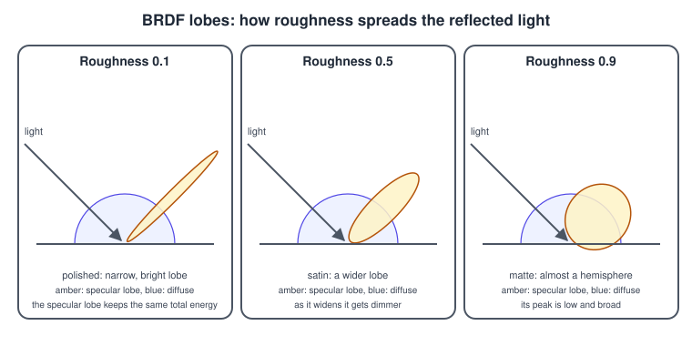
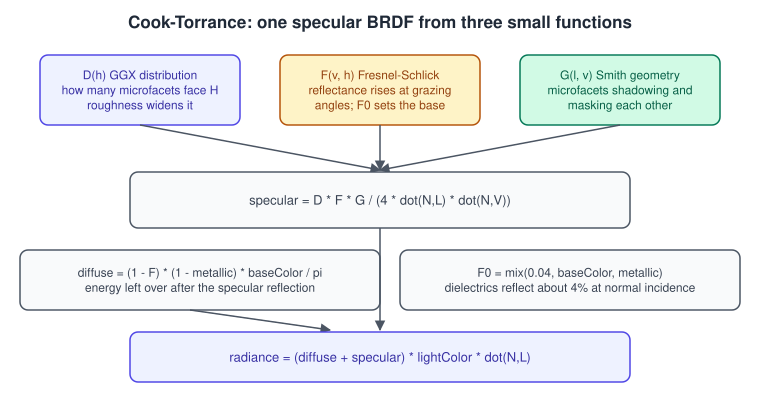
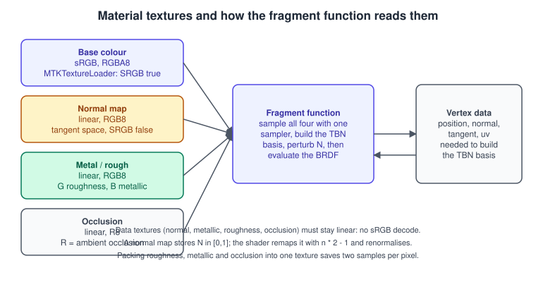
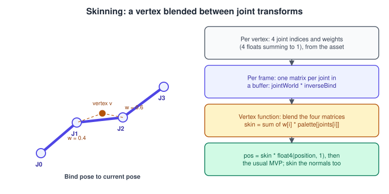

PBR Materials in Metal
|
This content was generated with the assistance of AI and should be verified against the official documentation before being relied on in production. |
Physically based rendering (PBR) is not a different kind of lighting, it is a different way of describing a surface. Instead of an ambient, a diffuse and a specular colour tuned by eye as in Lighting Fundamentals, a PBR material has a base colour, a metallic value and a roughness value. The shader derives how much light the surface reflects and how it spreads from those three numbers using a model that conserves energy, so materials keep a believable look when the lighting changes. This page explains the model, shows the Cook-Torrance BRDF in MSL, covers the texture maps that carry the parameters per pixel, normal mapping, and gives an overview of skeletal skinning, the other half of the character pipeline that Metal by Tutorials teaches next to materials.
The facts were checked in November 2026. The code is Swift 6 and MSL 4.0 (MSL 4.1 belongs to the 27 operating systems and nothing here needs it), written against the 26 SDKs with the Metal 3 encoder as the main path; the Metal 4 binding differences are the ones shown on the lighting page and in a short section below. Metal 4 needs an A14 Bionic or later or a Mac with Apple silicon; the maths and the Metal 3 path run on every Metal-capable device. The model is the metallic-roughness model of glTF 2.0, the same one stored in bookshelf.glb and in its PNG textures (wood, cover, spine and pages), so parameters transfer directly between glTF, Model I/O assets and this shader.


This is step 5 of the Metal Bookshelf running example, after the shadowed shelf of Shadows: the varnished wood of the shelf, the paper of the pages and the cloth of the covers get distinct materials, and the desk lamp gets a brass base. The concept page is Lighting and Shading Models; the same material in other libraries is in PBR Basics in OpenGL, Materials and Normal Mapping in OpenGL and three.js Materials and PBR. Light that arrives from the whole environment instead of from a few lamps is Image-Based Lighting and HDR.
What PBR changes
An empirical model such as Blinn-Phong has free parameters (ambient, diffuse, specular, shininess) that are not independent: a surface can be given a bright diffuse colour and a bright specular colour at once and reflect more light than it receives. PBR removes that freedom with four ideas.
-
Energy conservation. A surface cannot reflect more light than it receives. The light that is reflected specularly is not available for diffuse reflection, so the diffuse term is scaled by one minus the specular reflectance.
-
Two kinds of material. Dielectrics (wood, paper, plastic, cloth) reflect a small, colourless fraction, about 4 percent at normal incidence, and scatter the rest diffusely with the base colour. Metals reflect almost all of the light specularly, tinted by the base colour, and have no diffuse term. The metallic parameter blends between the two, and in practice is either 0 or 1 with fractional values only at texture boundaries such as rust or paint edges.
-
Roughness. Every surface is made of microscopic facets. Roughness is how much they scatter around the average normal, from a mirror (0) to chalk (1). It controls the width of the specular lobe, as the figure shows.
-
Fresnel. Reflectance grows as the viewing angle approaches the surface plane, for every material: even matte paper becomes mirror-like at a grazing angle.

The four numbers of a material in the glTF model are baseColor (an sRGB colour, or the colour of a metal), metallic, roughness and an optional occlusion that darkens crevices where ambient light does not reach. A fifth map, the normal map,
adds detail to the surface orientation without adding triangles.
The Cook-Torrance BRDF
A BRDF (bidirectional reflectance distribution function) gives, for a light direction L and a view direction V, the fraction of light reflected. The Cook-Torrance specular BRDF models the surface as microfacets and multiplies three terms:
\[f_{ spec } = \frac{D(\mathbf{H})\,F(\mathbf{V},\mathbf{H})\,G(\mathbf{L},\mathbf{V})}{4\,(\mathbf{N}\cdot\mathbf{L})(\mathbf{N}\cdot\mathbf{V})}\]

| Term | Question it answers | Common choice | Formula |
|---|---|---|---|
D, normal distribution |
How many microfacets are oriented along H? |
GGX (Trowbridge-Reitz), with \(\alpha = \text{ roughness }^2\) |
\(D = \dfrac{\alpha2}{\pi\left((\mathbf{N}\cdot\mathbf{H})2(\alpha^2 - 1) + 1\right)^2}\) |
F, Fresnel |
How much light is reflected at this angle? |
Schlick’s approximation |
\(F = F_0 + (1 - F_0)(1 - \mathbf{V}\cdot\mathbf{H})^5\) |
G, geometry |
How much do facets shadow and mask each other? |
Smith with Schlick-GGX |
\(G = G_1(\mathbf{L})\,G_1(\mathbf{V}),\ G_1(x) = \dfrac{\mathbf{N}\cdot x}{(\mathbf{N}\cdot x)(1 - k) + k}\) |
The base reflectance \(F_0\) is the Fresnel value at normal incidence: a fixed 0.04 for dielectrics, and the base colour for metals, so \(F_0 = \operatorname{mix}(0.04, \rho, \text{metallic})\). The remaining light is diffuse, scaled to conserve energy:
\[\mathbf{c}_{ diffuse } = (1 - F)\,(1 - \text{metallic})\,\frac{\rho}{\pi}\]
and the final radiance of one light is \((f_{ diffuse } + f_{ spec })\,\mathbf{c}_l\,\max(\mathbf{N}\cdot\mathbf{L},0)\). Here the division by \(\pi\) is part of the model, so light intensities are physical-style (a lamp of 3 to 30 units, not 1) and the sum of a scene’s lights should be tone mapped. For \(k\), direct lighting uses \((r + 1)^2/8\) and image-based lighting uses \(r^2/2\), with \(r\) the roughness; using the wrong one darkens specular noticeably. The clamp of \(\alpha\) to a small minimum (0.002 or so) prevents a division by zero for a mirror and a one-texel-wide highlight that flickers.
The shader
The structures extend the ShaderTypes.h of the lighting page; add two buffer indices, four texture indices and a material structure.
// Additions to ShaderTypes.h
typedef NS_ENUM(EnumBackingType, TextureIndex) {
TextureIndexBaseColor = 0,
TextureIndexNormal = 1,
TextureIndexMetalRough = 2, // glTF packing: G = roughness, B = metallic
TextureIndexOcclusion = 3
};
typedef struct {
vector_float3 baseColorFactor; // linear, multiplied with the texture
float metallicFactor;
float roughnessFactor;
float occlusionStrength;
float normalScale;
} PBRMaterial;// PBR.metal
#include <metal_stdlib>
#include "ShaderTypes.h"
using namespace metal;
constant bool hasNormalMap [[function_constant(0)]];
constant bool useNormalMap = is_function_constant_defined(hasNormalMap) ? hasNormalMap : false;
struct PBRVertexIn {
float3 position [[attribute(0)]];
float3 normal [[attribute(1)]];
float2 uv [[attribute(2)]];
float3 tangent [[attribute(3)]];
};
struct PBRVertexOut {
float4 position [[position]];
float3 worldPosition;
float3 worldNormal;
float3 worldTangent;
float2 uv;
};
vertex PBRVertexOut vertex_pbr(PBRVertexIn in [[stage_in]],
constant FrameUniforms &frame [[buffer(BufferIndexFrame)]],
constant ModelUniforms &model [[buffer(BufferIndexModel)]])
{
float4 world = model.model * float4(in.position, 1.0);
PBRVertexOut out;
out.position = frame.viewProjection * world;
out.worldPosition = world.xyz;
out.worldNormal = model.normalMatrix * in.normal;
out.worldTangent = model.normalMatrix * in.tangent;
out.uv = in.uv;
return out;
}
// --- BRDF terms -------------------------------------------------------------
static float D_GGX(float NdotH, float alpha)
{
float a2 = alpha * alpha;
float d = NdotH * NdotH * (a2 - 1.0) + 1.0;
return a2 / (M_PI_F * d * d);
}
static float G1_SchlickGGX(float NdotX, float k)
{
return NdotX / (NdotX * (1.0 - k) + k);
}
static float3 F_Schlick(float3 F0, float VdotH)
{
return F0 + (1.0 - F0) * pow(1.0 - VdotH, 5.0);
}
fragment float4 fragment_pbr(PBRVertexOut in [[stage_in]],
constant FrameUniforms &frame [[buffer(BufferIndexFrame)]],
constant PBRMaterial &mat [[buffer(BufferIndexMaterial)]],
constant Light *lights [[buffer(BufferIndexLights)]],
constant uint &lightCount [[buffer(BufferIndexLightCount)]],
texture2d<float> baseColorMap [[texture(TextureIndexBaseColor)]],
texture2d<float> normalMap [[texture(TextureIndexNormal), function_constant(useNormalMap)]],
texture2d<float> metalRoughMap [[texture(TextureIndexMetalRough)]],
texture2d<float> occlusionMap [[texture(TextureIndexOcclusion)]])
{
constexpr sampler s(filter::linear, mip_filter::linear, address::repeat, max_anisotropy(4));
// Material parameters (colour texture is sRGB, so the sample is already linear).
float3 albedo = mat.baseColorFactor * baseColorMap.sample(s, in.uv).rgb;
float3 mr = metalRoughMap.sample(s, in.uv).rgb;
float roughness = clamp(mat.roughnessFactor * mr.g, 0.045, 1.0);
float metallic = saturate(mat.metallicFactor * mr.b);
float ao = mix(1.0, occlusionMap.sample(s, in.uv).r, mat.occlusionStrength);
// Shading normal.
float3 N = normalize(in.worldNormal);
if (useNormalMap) {
float3 T = normalize(in.worldTangent - dot(in.worldTangent, N) * N); // Gram-Schmidt
float3 B = cross(N, T);
float3 tn = normalMap.sample(s, in.uv).xyz * 2.0 - 1.0;
tn.xy *= mat.normalScale;
N = normalize(float3x3(T, B, N) * tn);
}
float3 V = normalize(frame.cameraPosition - in.worldPosition);
float NdotV = max(dot(N, V), 1e-4);
float alpha = roughness * roughness;
float k = (roughness + 1.0) * (roughness + 1.0) / 8.0; // direct lighting
float3 F0 = mix(float3(0.04), albedo, metallic);
float3 color = frame.ambientColor * albedo * ao; // constant ambient until IBL
for (uint i = 0; i < lightCount; ++i) {
Light light = lights[i];
float3 L = normalize(light.type == LightTypeDirectional ? -light.position : light.position - in.worldPosition);
float att = 1.0;
if (light.type == LightTypePoint) {
float d = length(light.position - in.worldPosition);
float x = saturate(1.0 - pow(d / light.radius, 4.0));
att = x * x / (d * d + 0.01);
}
float3 H = normalize(L + V);
float NdotL = saturate(dot(N, L));
if (NdotL <= 0.0) { continue; }
float NdotH = saturate(dot(N, H));
float VdotH = saturate(dot(V, H));
float D = D_GGX(NdotH, alpha);
float G = G1_SchlickGGX(NdotL, k) * G1_SchlickGGX(NdotV, k);
float3 F = F_Schlick(F0, VdotH);
float3 specular = (D * G) * F / max(4.0 * NdotL * NdotV, 1e-4);
float3 diffuse = (1.0 - F) * (1.0 - metallic) * albedo / M_PI_F;
color += (diffuse + specular) * light.color * light.intensity * att * NdotL;
}
return float4(color, 1.0);
}Notes on the shader. M_PI_F is MSL’s single-precision constant. The function_constant(useNormalMap) on the normalMap argument means the texture parameter does not exist in the pipeline when the constant is false, so a material without a normal map does not need a dummy texture
(function constants are explained in The Metal Shading Language). The roughness is clamped to 0.045 so the highlight of a mirror keeps a visible size; real-time engines commonly use a value between
0.03 and 0.1. The continue for back-facing lights skips the whole BRDF for that light, which is cheaper than multiplying zero.
Material maps
A uniform material (one colour, one metallic and one roughness for the whole mesh) is the PBRMaterial factors alone. Detail comes from textures that supply the same parameters per pixel. The map set, as the figure shows, has four members, and the colour space of each is not negotiable.

| Map | Stores | Colour space | Notes |
|---|---|---|---|
Base colour (albedo) |
Diffuse colour of dielectrics, tint of metals |
sRGB |
Load with the sRGB option or an |
Normal |
Tangent-space normal remapped to 0..1 |
Linear |
Green channel up (OpenGL, glTF) or down (DirectX); invert when the source uses the other convention. Do not compress with a format that distorts blue; ASTC with a normal-map profile or BC5 with the third component rebuilt are the usual choices. |
Metallic-roughness |
G = roughness, B = metallic (glTF packing) |
Linear |
Other tools use separate maps or put metallic in R; remap in the importer, not per pixel. |
Occlusion |
R = ambient visibility |
Linear |
Often stored in the R channel of the same texture as roughness and metallic, which saves one sample. |
Loading is where the colour-space rule is enforced. MTKTextureLoader applies the sRGB conversion according to the SRGB option:
import MetalKit
struct PBRTextureSet {
let baseColor: MTLTexture
let normal: MTLTexture?
let metalRough: MTLTexture
let occlusion: MTLTexture
init(device: MTLDevice, baseName: String, hasNormal: Bool) throws {
let loader = MTKTextureLoader(device: device)
func load(_ name: String, srgb: Bool) throws -> MTLTexture {
let options: [MTKTextureLoader.Option: Any] = [
.SRGB: srgb, // false for data textures
.generateMipmaps: true,
.textureUsage: MTLTextureUsage.shaderRead.rawValue,
.textureStorageMode: MTLStorageMode.private.rawValue
]
return try loader.newTexture(name: name, scaleFactor: 1, bundle: nil, options: options)
}
baseColor = try load("\(baseName)-basecolor", srgb: true)
if hasNormal {
normal = try load("\(baseName)-normal", srgb: false)
} else {
normal = nil
}
metalRough = try load("\(baseName)-metalrough", srgb: false)
occlusion = try load("\(baseName)-occlusion", srgb: false)
}
}Source: MetalKit: MTKTextureLoader
Loading a data texture with SRGB left to its default can silently apply the sRGB decode, which brightens roughness and tilts normals; always set it explicitly. Textures can also come from Model I/O materials:
MDLMaterial stores properties by semantic (MDLMaterialSemantic.baseColor, .tangentSpaceNormal, .roughness, .metallic, .ambientOcclusion), and a property’s textureSamplerValue or urlValue gives the image to load, covered in Models with Model I/O and USD. Mipmaps, filtering and compressed formats (ASTC, BC) are in Textures and Samplers; the one rule specific to PBR
is that roughness maps should be mipmapped carefully (average the normal map’s variance into the roughness when generating mips) or distant surfaces shimmer, a refinement that engines apply with offline tools.
Pipeline and drawing with optional maps
// Build two pipeline variants from one shader: with and without a normal map.
func makePBRPipeline(device: MTLDevice, library: MTLLibrary, vertexDescriptor: MTLVertexDescriptor,
colorFormat: MTLPixelFormat, depthFormat: MTLPixelFormat,
withNormalMap: Bool) throws -> MTLRenderPipelineState {
let constants = MTLFunctionConstantValues()
var hasNormalMap = withNormalMap
constants.setConstantValue(&hasNormalMap, type: .bool, index: 0)
let desc = MTLRenderPipelineDescriptor()
desc.vertexFunction = try library.makeFunction(name: "vertex_pbr", constantValues: constants)
desc.fragmentFunction = try library.makeFunction(name: "fragment_pbr", constantValues: constants)
desc.vertexDescriptor = vertexDescriptor
desc.colorAttachments[0].pixelFormat = colorFormat
desc.depthAttachmentPixelFormat = depthFormat
return try device.makeRenderPipelineState(descriptor: desc)
}
// In the render loop, for each material:
func bind(_ textures: PBRTextureSet, factors: PBRMaterial, to encoder: MTLRenderCommandEncoder) {
var factors = factors
encoder.setFragmentBytes(&factors, length: MemoryLayout<PBRMaterial>.stride, index: BufferIndex.material.rawValue)
encoder.setFragmentTexture(textures.baseColor, index: TextureIndex.baseColor.rawValue)
if let normal = textures.normal {
encoder.setFragmentTexture(normal, index: TextureIndex.normal.rawValue)
}
encoder.setFragmentTexture(textures.metalRough, index: TextureIndex.metalRough.rawValue)
encoder.setFragmentTexture(textures.occlusion, index: TextureIndex.occlusion.rawValue)
}Source: Metal: MTLFunctionConstantValues
The Bookshelf frame uses a handful of materials, so the draw list is sorted by pipeline and then by material to avoid redundant state changes. Under Metal 4 the same textures are bound with
table.setTexture(texture.gpuResourceID, index:) on the MTL4ArgumentTable and must belong to a residency set; with many materials the better design is to put the textures of every material in one argument buffer or table and index it
from the shader, the subject of Argument Buffers and Bindless Resources. Pipelines under Metal 4 are built by MTL4Compiler, which supports function specialisation; see
Shader Compilation and Pipeline Caching.
Normal mapping
A normal map stores, per texel, the direction the surface normal should have, expressed in tangent space: a coordinate frame glued to the surface, with Z along the geometric normal and X and Y along the texture’s U and V directions. This makes the map independent of the object’s orientation, so one brick texture works on any wall. To use it the shader needs the frame, the TBN matrix, whose columns are the tangent T, the bitangent B and the normal N, all in world space; multiplying the unpacked tangent-space normal by it gives the world-space shading normal.
-
Tangents. The vertex needs a tangent. Model I/O computes it from positions, normals and texture coordinates with
MDLMesh.addTangentBasis(forTextureCoordinateAttributeNamed:normalAttributeNamed:tangentAttributeNamed:), giving a tangent attribute (MDLVertexAttributeTangent) that the vertex descriptor then exposes as attribute 3. glTF assets carry a tangent with a fourth component, the handedness (1 or -1), which flips the bitangent for mirrored UVs:B = cross(N, T) * handedness. -
Orthogonalise. Interpolated vectors are not exactly perpendicular, so the example removes the part of T along N (Gram-Schmidt) before building B.
-
Unpack. The stored value is in 0..1; \(n = 2\,\text{ texel } - 1\). A
normalScalefactor on the X and Y components strengthens or flattens the effect without leaving unit length once renormalised. -
Green channel. OpenGL and glTF maps have Y pointing up in texture space; DirectX maps point down. A wrongly oriented map lights bumps as if they were dents.
-
Without tangents. A fragment function can build the frame from screen-space derivatives (
dfdx,dfdyof the position and UV); it avoids a tangent attribute but costs derivatives and shows seams on mirrored UVs, so precomputed tangents are the default.
The normal map changes only the lighting, not the silhouette or the shadows, which is why it is combined with the shadow map of the next page and, for large relief, replaced by displacement through tessellation or a mesh shader (Tessellation, Mesh Shaders).
Putting it together: Bookshelf materials
| Surface | Base colour | Metallic | Roughness | Maps | Remarks |
|---|---|---|---|---|---|
Shelf wood |
warm brown, from the wood texture |
0 |
0.55 to 0.7 from the texture’s G channel |
base colour, optional normal, occlusion |
The first thing to look glossy when the roughness is wrong |
Book cover |
cloth colours, from the cover texture |
0 |
0.8 |
base colour |
Rough dielectric: the specular lobe is a faint, wide sheen |
Pages |
off-white |
0 |
0.9 |
base colour |
Almost purely diffuse; a slight emission-free ambient term is enough |
Lamp base |
brass (0.91, 0.78, 0.42) |
1 |
0.3 |
constants |
A metal: base colour tints the highlight, no diffuse |
The lamp base is not part of bookshelf.glb, which holds only the shelf and the books; add it as a small extra mesh. Drawing the shelf with fragment_pbr instead of the Blinn-Phong function changes four things a reader can see in the finished frame: highlights become broader and dimmer on rough wood, the lamp base shows a tinted highlight, edges of the books gain Fresnel
brightening at grazing angles, and the backs of the books stay readable because of the ambient and occlusion terms. Reflections of the room in the glossy wood are still missing, because a lamp is the only light; that is the reason for
Image-Based Lighting and HDR, and for the ray-traced reflections of Ray Tracing.
Skinning overview
Skeletal animation deforms a mesh by moving joints (bones) and blending each vertex between the joints that influence it. The Bookshelf’s books are rigid and need no skinning, but characters, cloth-like props and anything bendy do, and Metal by Tutorials treats it alongside materials, so this section is the overview you need to connect an animated asset to a Metal pipeline.

The data has two parts.
-
Per vertex, from the asset: up to four joint indices and four weights that sum to 1. In Model I/O these are the attributes
MDLVertexAttributeJointIndicesandMDLVertexAttributeJointWeights; in a Metal vertex descriptor they are typically.ushort4and.float4. More than four influences per vertex are reduced to the four heaviest and renormalised by the exporter. -
Per frame, from the skeleton and the animation: one 4x4 matrix per joint, the palette. Each is the joint’s current world transform multiplied by its inverse bind matrix, the transform that brings the mesh from the bind pose to the joint’s local space: \(P_j = W_j \cdot B_j^{ -1 }\). Model I/O provides the skeleton (
MDLSkeleton), packed joint animation (MDLPackedJointAnimation) andMDLAnimationBindComponentthat binds an animation to a mesh; the same data from a glTF or USD file arrives through the loader you choose.
The palette is cheap to compute on the CPU for one character; for crowds, evaluate it in a compute kernel. The joints are stored parent before child, so a single pass computes the world transforms:
import simd
struct Skeleton {
var parents: [Int] // -1 for the root; parents come before their children
var inverseBind: [simd_float4x4]
}
struct JointPose {
var translation: simd_float3
var rotation: simd_quatf
var scale: simd_float3
var matrix: simd_float4x4 {
let r = simd_float4x4(rotation)
let s = simd_float4x4(diagonal: simd_float4(scale, 1))
var m = r * s
m.columns.3 = simd_float4(translation, 1)
return m
}
}
/// Blend two keyframes, then build the palette written to the GPU each frame.
func jointPalette(skeleton: Skeleton, from a: [JointPose], to b: [JointPose], t: Float) -> [simd_float4x4] {
var world = [simd_float4x4](repeating: matrix_identity_float4x4, count: skeleton.parents.count)
var palette = world
for j in 0..<skeleton.parents.count {
let pose = JointPose(translation: simd_mix(a[j].translation, b[j].translation, simd_float3(repeating: t)),
rotation: simd_slerp(a[j].rotation, b[j].rotation, t),
scale: simd_mix(a[j].scale, b[j].scale, simd_float3(repeating: t)))
let local = pose.matrix
world[j] = skeleton.parents[j] < 0 ? local : world[skeleton.parents[j]] * local
palette[j] = world[j] * skeleton.inverseBind[j]
}
return palette
}
// Per frame: copy the palette into this frame's slot of a ring buffer and bind it.
// jointBuffer.contents().advanced(by: slotOffset).copyMemory(from: palette, byteCount: palette.count * MemoryLayout<simd_float4x4>.stride)
// encoder.setVertexBuffer(jointBuffer, offset: slotOffset, index: BufferIndex.joints.rawValue)Source: Model I/O: MDLSkeleton
Rotations are interpolated as quaternions with simd_slerp; translations and scales are interpolated linearly. Interpolating matrices directly shears the mesh, which is why the pose is kept as translation, rotation and scale until the last step. The ring buffer is the usual
frames-in-flight pattern of MetalKit, MTKView and SwiftUI: the CPU writes the next frame’s palette while the GPU still reads the previous one. The vertex function does the blend:
// Skinning.metal (BufferIndexJoints = 6 added to ShaderTypes.h)
struct SkinnedVertexIn {
float3 position [[attribute(0)]];
float3 normal [[attribute(1)]];
float2 uv [[attribute(2)]];
float3 tangent [[attribute(3)]];
ushort4 joints [[attribute(4)]];
float4 weights [[attribute(5)]];
};
vertex PBRVertexOut vertex_skinned(SkinnedVertexIn in [[stage_in]],
constant FrameUniforms &frame [[buffer(BufferIndexFrame)]],
constant ModelUniforms &model [[buffer(BufferIndexModel)]],
constant float4x4 *palette [[buffer(BufferIndexJoints)]])
{
float4x4 skin = in.weights.x * palette[in.joints.x]
+ in.weights.y * palette[in.joints.y]
+ in.weights.z * palette[in.joints.z]
+ in.weights.w * palette[in.joints.w];
float4 world = model.model * (skin * float4(in.position, 1.0));
float3x3 skin3 = float3x3(skin[0].xyz, skin[1].xyz, skin[2].xyz); // correct for rotation and uniform scale
PBRVertexOut out;
out.position = frame.viewProjection * world;
out.worldPosition = world.xyz;
out.worldNormal = model.normalMatrix * (skin3 * in.normal);
out.worldTangent = model.normalMatrix * (skin3 * in.tangent);
out.uv = in.uv;
return out;
}The skinned vertex function returns the same PBRVertexOut as the static one, so the fragment function is shared. Points to know:
-
Weights must sum to 1. If they do not, the mesh shrinks toward the origin; renormalise on import.
-
Normals. Using the upper 3x3 of the blended matrix is exact for rotation and uniform scale. Non-uniform scale in a joint needs the inverse transpose of each matrix, which is rare in practice and expensive.
-
Shadow and ray-tracing passes. The shadow pass of the next page must run the same skinning, or the shadow shows the bind pose. When a skinned mesh must also be ray traced, skin it into a buffer with a compute kernel (see Compute Kernels) and refit the acceleration structure from that buffer.
-
Linear blend skinning artefacts. Large twists collapse the mesh (the "candy wrapper" effect). Corrective blend shapes, extra twist joints or dual-quaternion skinning address it; the data layout above stays the same except for what the palette holds.
-
Cost. Four matrix multiply-adds per vertex are inexpensive on Apple GPUs; the palette upload is small. Pre-skinning once in compute, then reusing the result for the shadow and main passes, saves work when the mesh is drawn several times per frame.
Common mistakes
| Symptom | Likely cause |
|---|---|
Metals look grey or dim |
|
Plastic look on everything |
Roughness map read in sRGB, or |
Normal-mapped bumps look inverted |
Green channel convention mismatch, or a mirrored UV without the handedness flip |
Specular is black at the edges |
|
Bright pixels flicker on small highlights |
Roughness near zero without a clamp, or no mipmapped roughness; raise the minimum roughness |
Colour looks too dark overall |
Light intensities still in Blinn-Phong scale (about 1 instead of tens), or the render target not sRGB |
Skinned mesh collapses to a point |
Joint weights not normalised, or the palette missing the inverse bind matrix |
Performance notes
-
The shader is dominated by texture fetches and a few
powcalls. Pack roughness, metallic and occlusion into one texture, as in glTF, so a material is three fetches instead of four. -
Use half precision for the colours, the roughness and the dot products; keep positions and the final divisions in
float. Apple GPUs runhalfarithmetic at higher throughput; the visible risk is in the specular denominator, which is why the example clamps it. -
Replace
pow(1 - VdotH, 5)with repeated multiplication if the compiler does not already do so; the exponent is a literal and the cost is small either way. -
Compile material variants through function constants (as with the normal map) instead of branching on a runtime flag per pixel; a uniform branch is cheap but a removed texture binding and a smaller register footprint are cheaper.
-
Block-compress the textures (ASTC on every Apple GPU since A8, BC on Mac): a 2048 x 2048 RGBA8 base colour map is 16 MB, in ASTC 6x6 about 2 MB, which matters more for bandwidth than any shader trick. See Textures and Samplers.
What changed since the older guides
| Older guide | Today |
|---|---|
Metal by Tutorials, 4th edition (Metal 3, Xcode 15), chapters 10, 11 and 21 to 24 on lighting, PBR and animation: a new |
The model is unchanged. Metal 4 (26 OSes) binds data through an |
Metal by Tutorials, 4th edition: textures bound one by one per material |
Argument buffers, |
Metal Programming Guide (Metal 2, Xcode 9), chapter 9: |
|
Both books: skeleton data from Model I/O |
Model I/O still provides |
References
-
Metal Shading Language Specification: https://developer.apple.com/metal/Metal-Shading-Language-Specification.pdf
-
Metal documentation: https://developer.apple.com/documentation/metal
-
MTKTextureLoader: https://developer.apple.com/documentation/metalkit/mtktextureloader
-
MTLFunctionConstantValues: https://developer.apple.com/documentation/metal/mtlfunctionconstantvalues
-
Model I/O, MDLSkeleton: https://developer.apple.com/documentation/modelio/mdlskeleton
-
Model I/O, MDLPackedJointAnimation: https://developer.apple.com/documentation/modelio/mdlpackedjointanimation
-
Model I/O, MDLMaterialSemantic: https://developer.apple.com/documentation/modelio/mdlmaterialsemantic
-
Understanding the Metal 4 core API: https://developer.apple.com/documentation/metal/understanding-the-metal-4-core-api
-
Metal by Tutorials (Kodeco): https://www.kodeco.com/books/metal-by-tutorials
-
Metal Programming Guide (InformIT): https://www.informit.com/store/metal-programming-guide-tutorial-and-reference-via-9780134668949